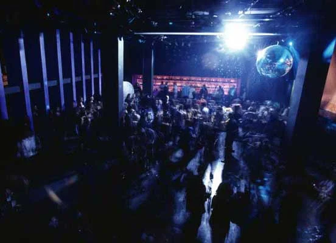
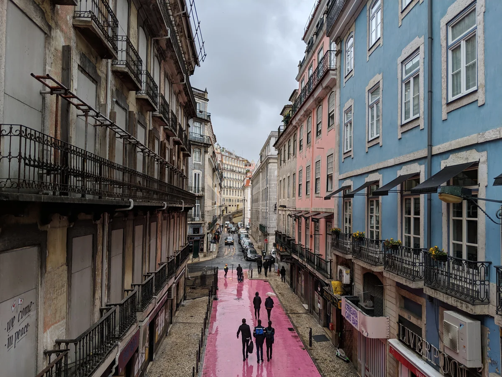
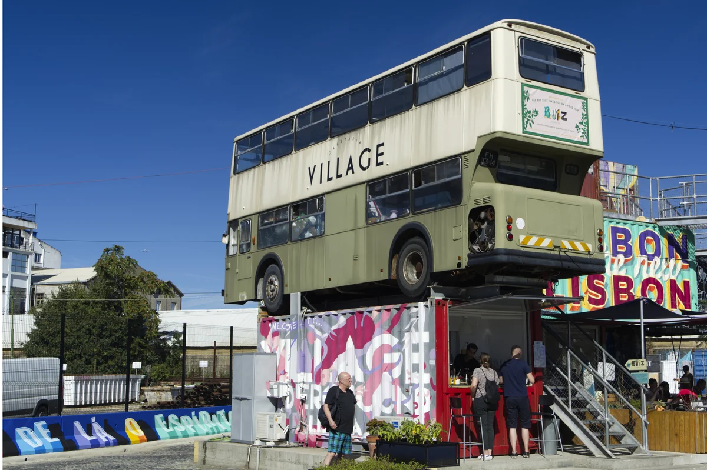

Lisbon clubs
The best clubs in Lisbon, from Lux Frágil to Ministerium
A converted dockside warehouse that has anchored the city since 1998, a former Ministry of Finance wing now known for Afro-house, and the club the neighbourhood lost in 2025: the best clubs in Lisbon now.
A club scene that runs on the river.
Lisbon's club scene runs on the river. Its oldest and most important room sits in a converted dockside warehouse, and its most talked-about current venue occupies a wing of the old Ministry of Finance on the city's main square. Several names that mattered five years ago have shut since. This guide covers what's still running, what anchors Lisbon's reputation, and what the city has lost.
Lux Frágil, in more depth.
Before there was Lux, there was Frágil: a bar with a dance floor that Manuel Reis opened on Rua da Atalaia in Bairro Alto in 1982, with Zé Pedro Moura behind the decks as resident DJ. It ran for thirty years and drew a crowd that included some of Portugal's best-known musicians and film-makers. In 1992, for Frágil's tenth anniversary, Reis took the party out of Bairro Alto for a single night, into an abandoned tobacco factory in Marvila, Fábrica da Tabaqueira, for a party that pulled in thousands of people. That night convinced him nightlife could move to the riverfront for good.
Lux Frágil opened on 29 September 1998, in a 1910 concrete building on Cais da Pedra that had belonged to a stevedoring company, a short walk from Santa Apolónia station. It kept Frágil's name and Reis's instinct for design, and its rooftop terrace, where regulars watch the sun come up over the Tagus, became part of the club's reputation. Over the years it has booked Dixon, Tale of Us, Adriatique, The Martinez Brothers, Ben Klock and Freddy K, among hundreds of others, on a programme built around house and techno.

The Guardian named it one of the 25 best nightclubs in Europe in a December 2014 list, and Lux still turns up on international rankings a decade on: the International Nightlife Association placed it in its 100 Best Clubs list for 2025. Reis died on 25 March 2018, aged 71, after a long illness, the year Lux turned twenty, seven years before that 2025 ranking. Time Out Lisboa's obituary headline put it plainly: "Andy Warhol was lazy next to Manuel Reis."
House and techno aren't the only sound Lisbon has exported. Kuduro, the fast, percussive Angolan-Portuguese dance style, found its biggest international audience through Buraka Som Sistema, a Lisbon group that fused kuduro with electronic production and toured the sound to festivals and clubs across Europe and the US. Their 2013 set for Boiler Room's Lisbon stop, part of a Red Bull Music Academy takeover, is still one of the most watched Boiler Room broadcasts filmed in the city.
Buraka Som Sistema went on an indefinite hiatus after a final Lisbon show in July 2016, then reunited in 2025, ten years on, for a comeback that put kuduro back on Lisbon's own stages.
The best clubs in Lisbon now.
| Club | Area | Music and character | Best for |
|---|---|---|---|
| Lux Frágil | Cais da Pedra, since 1998 | House and techno in a converted dockside warehouse, hosted Dixon, Ben Klock and Freddy K among many others | Lisbon's essential stop and its sunrise river terrace |
| Ministerium Club | Praça do Comércio, since 2012 | House and techno in a former Ministry of Finance wing, plus Konda Records' Afro-house nights | Afro-house rarely served elsewhere in the city |
| Kremlin | Santos, since 1988 (closed 2011, reopened 2016) | A former convent's stone arches, one of the few 1990s Lisbon clubs to survive a closure and come back | A genuine link to Lisbon's 1990s club history, not a revival of it |
| Village Underground Lisboa | Alcântara, since 2017 | A warehouse-scale creative campus in stacked shipping containers, running club and gig nights alongside its coworking space | The newer, warehouse end of the scene |
Ministerium, Kremlin and the rest of the current scene.
Ministerium Club opened in December 2012 inside a wing of Praça do Comércio, Lisbon's riverside square, in rooms that had previously housed the Portuguese Ministry of Finance. The space dates from the square's 1700s rebuilding after the 1755 earthquake, and the club has kept its vaulted ceilings while hanging work by Portuguese artists on the walls. Saturday nights run house and techno from local and touring DJs, but the club's most distinctive booking is the Konda Records parties, which programme Afro-house rarely served elsewhere in the city. Príncipe label veteran DJ Marfox has described that sound as carrying "a very specific swing from Lisbon," made in part by a younger generation from the city's suburbs building their own take on the genre.
Kremlin, in the Santos district, closed once before reaching its current form. It opened in 1988 and became one of Lisbon's defining clubs through the 1990s, ranked among Europe's best by DJ magazine at the time, before a run of violent incidents forced it to close in 2011. A group of investors reopened it in 2016, keeping the stone arches of the building's former convent while changing the decor around them. It still runs Friday and Saturday nights into the small hours, one of the few 1980s-era Lisbon clubs to survive a closure and reopen.
Cais do Sodré and the venues Lisbon lost.
Not every Lisbon institution has managed that. Musicbox, under the arches of Rua Nova do Carvalho, the street known locally as Pink Street for its painted road surface, ran concerts and club nights for almost nineteen years before closing for good in September 2025. It had opened in 2006 as a small, eclectic room mixing jazz, rock and house, and stood at the centre of the street's shift from former red-light district to nightlife strip. For Príncipe's DJ Marfox, who came up playing there, the closure felt "strange." He has compared the club to a training ground: "the best DJ, the best artist, the best person."

Musicbox wasn't the only loss. Outra Cena, an alternative club in a former wine warehouse on the city's outskirts that had become one of Lisbon's most talked-about DIY venues, has been closed since two police raids in late 2025; its team launched a fundraising compilation in 2026 to support the club while its future stays unresolved. Lounge, a long-running, free-entry Cais do Sodré fixture that had mixed live bands and DJ sets across genres for twenty-five years, closed in 2024. None of this means Lisbon's underground has gone quiet. DJ Mag's own reporting on the city in 2026 found a scene of collectives, labels and pop-up parties still filling the gap the closed clubs left, even as rising rents and redevelopment keep squeezing the venues that host them.
Where to go out in Lisbon.
Lisbon's clubs cluster in three stretches along the river. Ministerium sits right on Praça do Comércio in Baixa, the city centre; Kremlin and what's left of Pink Street's nightlife are a short walk away in Cais do Sodré and Santos; and Lux Frágil sits alone at the eastern end of the waterfront in Alfama, near Santa Apolónia station. Further west, past Belém, Alcântara's old industrial buildings have become the newer, warehouse-scale end of the scene.
Village Underground Lisboa, on Avenida da Índia in Alcântara, is the clearest example: a creative campus built from stacked shipping containers and a retired double-decker bus, converted from a riverside warehouse and running as a co-working space, event venue and club since 2017. Boiler Room filmed a session there in 2019 with Parris, the London producer known for UK bass and techno, and Chima Hiro on the same bill.

The two sets are further evidence that Lisbon's newer, warehouse-scale venues are pulling in international bookings too.
Beyond these, the city's own current listings point to Marvila's 8 Marvila, the Konda Records nights at Ministerium already mentioned, and a rotating set of DIY parties and pop-ups that don't keep a fixed address long enough to recommend by name. None of the smaller rooms were researched to the same depth as the clubs above for this guide.
Lisbon clubs FAQ.
Is Lux Frágil still open?
Yes. It has run continuously from the same building on Cais da Pedra since 29 September 1998, and it remains the club most associated with Lisbon's nightlife internationally, including a spot on the International Nightlife Association's 100 Best Clubs list for 2025.
What happened to Musicbox in Lisbon?
It closed for good in September 2025 after almost nineteen years on Rua Nova do Carvalho, known as Pink Street. The venue had run concerts and club nights there since 2006; no replacement or reopening has been announced.
What is the best nightclub in Lisbon, Portugal?
Lux Frágil, by reputation rather than a published capacity figure: it's the club most consistently named across international rankings and Lisbon's own tourism coverage, and the one every other guide to the city treats as the essential stop.
Is Lisbon's club scene struggling?
Some of its venues are. Musicbox, Outra Cena and Lounge have all closed since 2024, and DJ Mag's own reporting on the scene ties the pressure to rising rents and redevelopment in the neighbourhoods clubs depend on. At the same time, clubs like Lux Frágil, Ministerium and Kremlin are still running, and a wider ecosystem of collectives, labels and pop-up parties keeps filling in around the venues that have shut.
Are there other clubs in Lisbon worth knowing about?
Yes, though this guide researched five in depth. Village Underground Lisboa's warehouse events in Alcântara, Marvila's 8 Marvila, and the Konda Records Afro-house nights at Ministerium all turn up regularly in Lisbon's own club listings.
Sources.
- Resident Advisor: RA Guide to Lisbon
- Time Out Lisbon: The 21 best clubs in Lisbon (2024)
- Lisbon Lux: Lisbon Clubs, 2026 Guide
- DJ Mag: Underground Resilience: Lisbon's DIY club scene refuses to give up on the dancefloor (2026)
- Lux Frágil's opening date, Cais da Pedra address and Frágil-era history, per Portuguese Wikipedia's well-cited "Lux Frágil" article.
- Manuel Reis's death, 25 March 2018, per Expresso, Observador and Jornal Económico.
- Musicbox's 2006 opening and September 2025 closure, per Liveurope, ICNS.lx and a Rock Bar Legends article dated 5 September 2026.
- The Guardian's 2014 "25 best nightclubs in Europe" ranking of Lux Frágil could not be opened directly this session; it is reported here via two independent secondary citations (Time Out, Lisbon Serviced Apartments) rather than the original article, and is recorded as medium confidence in the editorial review's fact-check ledger.
Continue reading
Read next.
 Rave spots~11 min read
Rave spots~11 min readBest Clubs in NYC: From the Paradise Garage to Nowadays
Nowadays, Basement, Public Records, Good Room and Elsewhere: the best clubs in NYC for house and techno now, and the history from the Loft to Output.
Read article → Rave spots~7 min read
Rave spots~7 min readBest Clubs in Tokyo: WOMB, Contact and the Ban on Dancing
WOMB, Contact, Vent and Circus Tokyo: the best clubs in Tokyo for house, techno and bass music, and the 68-year law against dancing that shaped them.
Read article → Rave spots~6 min read
Rave spots~6 min readBest Clubs in Budapest: A38, Instant-Fogas and Turbina
A38's converted cargo ship, the seven rooms of Instant-Fogas and Turbina's techno nights: the best clubs in Budapest now, and the ruin bars several grew out of.
Read article → Rave spots~6 min read
Rave spots~6 min readBest Clubs in Prague: Cross Club, Karlovy Lázně and Ankali
Cross Club's salvaged machinery, Karlovy Lázně's five floors and Ankali's techno nights: the best clubs in Prague, mainstream and underground.
Read article →